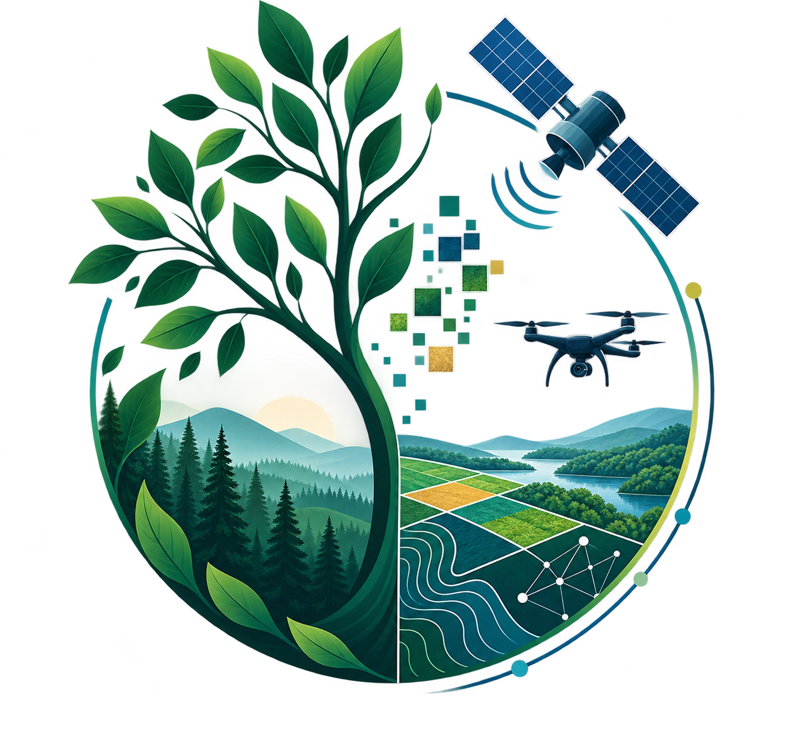

<section id="Inicio" class="min-h-screen bg-[#F4F9F9] py-24">
  <div class="container mx-auto px-6">

    <div class="max-w-6xl mx-auto">

      <!-- Hero principal -->
      <div class="grid grid-cols-1 md:grid-cols-2 gap-12 md:gap-16 items-start">

        <!-- Ilustração -->
        <div class="sr-item flex justify-center md:justify-start">
          
        </div>

        <!-- Apresentação principal -->
        <div class="sr-item md:pt-8">

          <p class="text-lg md:text-xl text-[#2A9D8F] mb-3"
             data-pt="Hey, que bom te ver por aqui 👋"
             data-en="Hey, glad to see you here 👋">
            Hey, que bom te ver por aqui 👋
          </p>

          <h1 class="text-4xl md:text-6xl font-bold font-playfair text-[#0B3D52] leading-tight mb-4"
              data-pt="Sou a Sally Silva"
              data-en="I'm Sally Silva">
            Sou a Sally Silva
          </h1>

          <p class="text-xl md:text-2xl text-[#2A9D8F] font-semibold mb-8"
             data-pt="Doutora em Engenharia Florestal"
             data-en="PhD in Forest Engineering">
            Doutora em Engenharia Florestal
          </p>

          <div class="h-px bg-gray-200 mb-8"></div>

          <p class="text-base md:text-lg text-gray-600 leading-relaxed"
             data-pt="Sensoriamento remoto · Geoprocessamento · Inteligência Artificial · Florestas · Agricultura · Dados geoespaciais"
             data-en="Remote Sensing · Geoprocessing · Artificial Intelligence · Forestry · Agriculture · Geospatial Data">
            Sensoriamento remoto · Geoprocessamento · Inteligência Artificial
            Florestas · Agricultura · Dados geoespaciais
          </p>

        </div>

      </div>


      <!-- Texto de apresentação -->
      <div class="max-w-4xl mt-20 sr-item">

        <p class="text-lg md:text-xl leading-relaxed text-gray-700 mb-6"
           data-pt="Sou apaixonada por transformar dados de sensoriamento remoto em respostas, explorando informações espectrais para enxergar além do que os olhos podem ver e identificar padrões relacionados à saúde, ao estresse e ao desenvolvimento da vegetação."
           data-en="I'm passionate about turning remote sensing data into answers, exploring spectral information to see beyond what the eye can and identify patterns related to plant health, stress, and vegetation development.">
          Sou apaixonada por transformar dados de sensoriamento remoto em respostas,
          explorando informações espectrais para enxergar além do que os olhos podem ver
          e identificar padrões relacionados à saúde, ao estresse e ao desenvolvimento
          da vegetação.
        </p>

        <p class="text-lg md:text-xl leading-relaxed text-gray-700"
           data-pt="No dia a dia, integro sensoriamento remoto, geoprocessamento e inteligência artificial, programando em R e Python e utilizando ferramentas como QGIS e ArcGIS para transformar dados em mapas, análises e modelos que apoiam pesquisadores, produtores e gestores na tomada de decisão."
           data-en="Day to day, I bring together remote sensing, geoprocessing, and artificial intelligence, programming in R and Python and using tools like QGIS and ArcGIS to turn data into maps, analyses, and models that support researchers, producers, and managers in decision-making.">
          No dia a dia, integro sensoriamento remoto, geoprocessamento e inteligência
          artificial, programando em R e Python e utilizando ferramentas como QGIS e
          ArcGIS para transformar dados em mapas, análises e modelos que apoiam
          pesquisadores, produtores e gestores na tomada de decisão.
        </p>

      </div>


      <!-- Trajetória acadêmica -->
      <div class="mt-24 pt-12 border-t border-gray-200 sr-item">

        <h3 class="text-lg font-bold text-[#0B3D52] mb-10 uppercase tracking-wide"
            data-pt="Trajetória Acadêmica"
            data-en="Academic Timeline">
          Trajetória Acadêmica
        </h3>

        <div class="space-y-6 max-w-4xl">

          <!-- Doutorado -->
          <div class="flex items-start gap-5">
            <span class="text-2xl">🇧🇷</span>

            <div>
              <h4 class="font-bold text-[#0B3D52] mb-1"
                  data-pt="2022 – 2026 · Doutorado em Engenharia Florestal"
                  data-en="2022 – 2026 · PhD in Forest Engineering">
                    2022 – 2026 · Doutorado em Engenharia Florestal
              </h4>

              <p class="text-gray-600 text-sm md:text-base leading-relaxed"
                 data-pt="Universidade Federal de Santa Maria (UFSM), Santa Maria, RS, Brasil"
                 data-en="Federal University of Santa Maria (UFSM), Santa Maria, RS, Brazil">
                Universidade Federal de Santa Maria (UFSM), Santa Maria, RS, Brazil
              </p>
            </div>
          </div>

          <!-- Mestrado -->
          <div class="flex items-start gap-5">
            <span class="text-2xl">🇧🇷</span>

            <div>
              <h4 class="font-bold text-[#0B3D52] mb-1"
    data-pt="2020 – 2020 · Mestrado em Engenharia Florestal"
    data-en="2020 – 2020 · MSc in Forest Engineering">
  2020 – 2020 · Mestrado em Engenharia Florestal
</h4>

              <p class="text-gray-600 text-sm md:text-base leading-relaxed"
                 data-pt="Universidade Federal de Santa Maria (UFSM), Santa Maria, RS, Brasil"
                 data-en="Federal University of Santa Maria (UFSM), Santa Maria, RS, Brazil">
                Universidade Federal de Santa Maria (UFSM), Santa Maria, RS, Brazil
              </p>
            </div>
          </div>

          <!-- Graduação -->
          <div class="flex items-start gap-5">
            <span class="text-2xl">🇧🇷</span>

            <div>
              <h4 class="font-bold text-[#0B3D52] mb-1"
                  data-pt="2014 – 2019 · Graduação em Engenharia Florestal"
                  data-en="2014 – 2019 · BSc in Forest Engineering">
                2014 – 2019 · Graduação em Engenharia Florestal
              </h4>

              <p class="text-gray-600 text-sm md:text-base leading-relaxed"
                 data-pt="Universidade do Estado do Pará (UEPA), Paragominas, PA, Brasil"
                 data-en="State University of Pará (UEPA), Paragominas, PA, Brazil">
                Universidade do Estado do Pará (UEPA), Paragominas, PA, Brasil
              </p>
            </div>
          </div>

        </div>

      </div>

    </div>

  </div>
</section>
